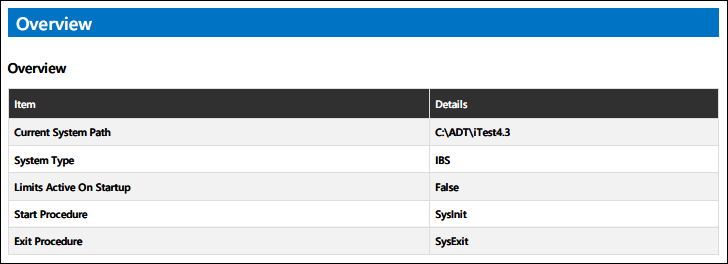
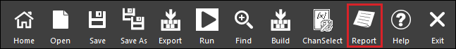

iTest User's Guide
SolutionBuilder's configuration reports contain configuration information for your solution. Each of SolutionBuilder's editors will have a corresponding section in the report, which will contain any items in their sub-editors as well as details for each item. When you create a configuration report in SolutionBuilder, a ConfigReport.pdf is saved to the $SUPPORTDIR and will open in your default PDF viewing tool.
SolutionBuilder configuration reports contain information for the following editors:
Each report includes an overview page that lists solution details, including the system type and number of specimens and cyclers, as shown in the example below.
Report Overview

To generate a configuration report, click the Report button in SolutionBuilder's bottom bar.
Report Button

Your solution's configuration report will open as a PDF in a new window.
Configuration Report
When layouts are saved in SolutionBuilder, a layout preview and large layout preview PNG file are saved to $SYSTEMDIR\Layouts to be used for configuration reports. The LayoutPreviewLargeSize=Width,Height powertek.ini setting allows you to set the width and height for your large layout preview PNG file. When unspecified, the default value will be set to 800,600. To autosize the PNG to the size of the layout, set Width or Height to 0.
Example:
LayoutPreviewLargeSize=1024,768
 |
NOTE: | When set to empty (LayoutPreviewLargeSize=), the large preview PNG file will not be created on save. |